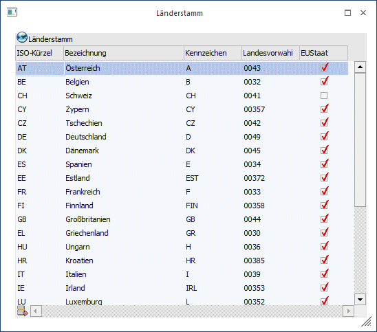
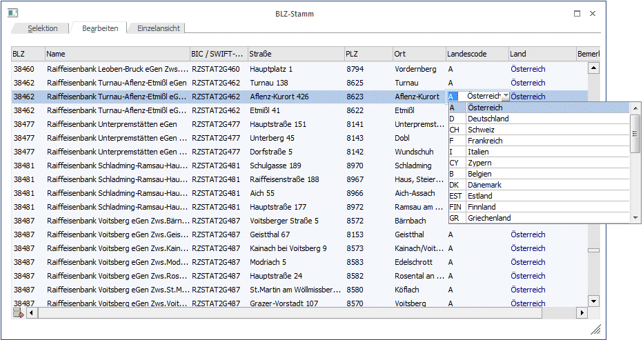
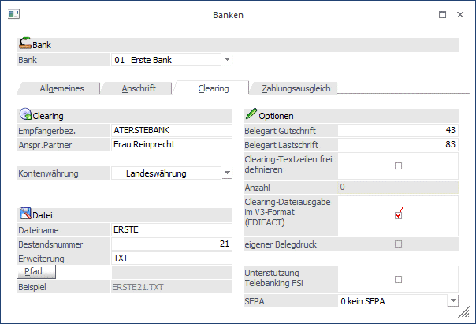
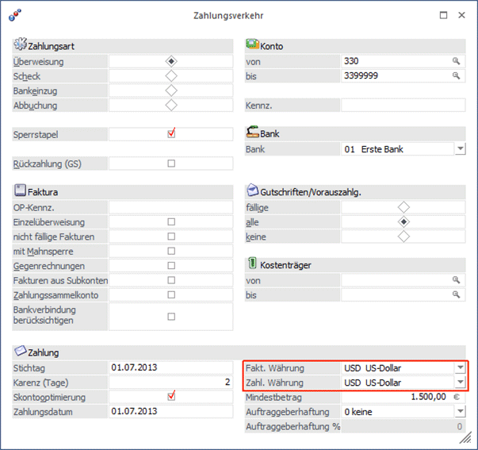
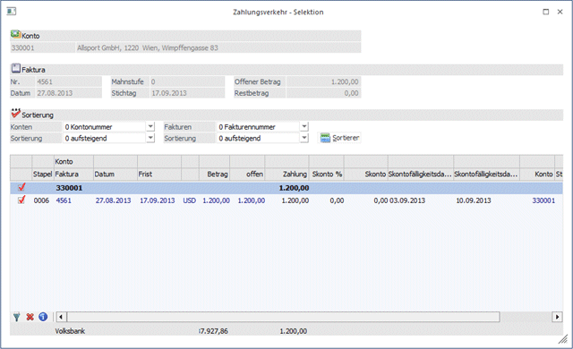
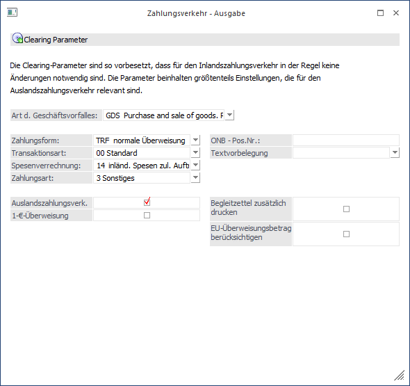

Es ist mit der WinLine möglich, auch Überweisungen an ausländische Bankinstitute mit Ausländischen Währungen (aber natürlich auch in Ihrer Landeswährung) durchzuführen. Dazu müssen erst einige Einstellungen in den Stammdaten vorgenommen werden.
Der Länderstamm muss eingerichtet sein.
Im Menüpunkt WinLine START finden Sie den Länderstamm unter
1 Optionen
1 Länderstamm

Ø ISO-Kennzeichen
Das ISO-Kürzel ist für die Statistische Meldung und den Auslandszahlungsverkehr in Österreich 2stellig, alphanumerisch (z.B. DE für Deutschland, AT für Österreich) und für Deutschland 3stellig numerisch.
Ø Bezeichnung
Hier kann die Bezeichnung für das entsprechende Land eingegeben werden.
Ø Kennzeichen
Über das Kennzeichen erkennt das Programm welches ISO-Kürzel verwendet wird. Im Feld Kennzeichen tragen Sie genau das Kennzeichen ein, wie es bei den Personenkonten im Feld Kennzeichen vor der Postleitzahl eingetragen ist.
Ø EU-Staat
In dieser Spalte wird das Checkbox bei den Mitgliedsstaaten der EU-Währungsunion gesetzt.
Ø BLZ- verantwortliche Stellennr. 1-3
Die Eingabe einer BLZ - verantwortliche Stellennr. (d. h. Nr. der empfangenden Clearingstelle) ist für den Auslandszahlungsverkehr erforderlich. Das bedeutet, man wählt jene Auslandsclearingstelle aus, über die die Überweisungen des jeweiligen Landes abgewickelt werden muss. Die Schweiz unterscheidet z.B. zwischen 5- und 7stelligen Bankleitzahlen. Je nachdem, welche BLZs man verwendet, müsste die eine oder andere Clearingstelle angesprochen werden, damit die Überweisung korrekt interpretiert werden kann.
Die Hinterlegung ist in jenen Ländern erforderlich, deren Clearingstellen nicht eindeutig anhand der BLZ-Nummern eine eindeutige Zuordnung für die Weiterleitung der Clearingdatei ermöglichen. Z. B. Für aus Österreich ausgehenden Auslandszahlungsverkehr nicht erforderlich, für Deutschland unbedingt erforderlich.
Einige Beispiele sind in den Demomandanten bereits eingegeben. Bitte stellen Sie fest (durch Anfrage bei Ihrer Bank) welche Codes Sie für Ihre Auslandsüberweisungen benötigen. Sollten diese Codes im Beispieldatenstand nicht enthalten sein, können Sie jeden beliebigen Code durch Drücken des Buttons Codeliste ergänzen.
Genauere Informationen zum Länderstamm können Sie dem Handbuch WinLine Start entnehmen.
Ausländische Banken im Bankenstamm einrichten
Im Programm WinLine START finden Sie den Bankenstamm unter dem Menüpunkt
1 Optionen
1 Bankleitzahlen
Die Anlage neuer Bankleitzahlen erfolgt im Register Bearbeiten durch Anklicken der nächsten freien Zeile.

Um den Auslandszahlungsverkehr durchführen zu können muss im Bankleitzahlenstamm mindestens die BLZ, Name der Bank und das Land ISO-Kennzeichen eingetragen sein. Zusätzlich muss in der Spalte Landescode für Banken die sich im Ausland befinden, auf den entsprechenden Code geschlüsselt sein, der im
1 WinLine START
1 Optionen
1 Länderstamm
für jedes Land festgelegt werden muss (andernfalls würde die Zahlung nicht als "Auslandszahlungsverkehr" erkannt und verstanden werden).
Sollte der Code des Landes fehlen, fragen Sie bitte bei Ihrer Hausbank nach, welcher Code hier für eine erfolgreiche Kommunikation eingegeben werden muss.
Die gebräuchlichsten Codes wurden bereits im Standard-Lieferumfang der FIBU mit ausgeliefert (siehe Codeliste im Länderstamm). Notwendige Einstellungen im Bankenstamm

Neben den "normalen" Einstellungen muss das Checkbox "Clearing-Dateiausgabe im V3-Format (EDIFACT) gesetzt sein, da die ausführenden Banken die Clearingdatei für den Auslandszahlungsverkehr nicht einlesen können. (Gilt nur für Österreich - in Deutschland ist ein AZV auch mit dem V2-Format möglich!)
Besonderheiten bei Durchführen des Auslandszahlungsverkehrs
Weitestgehend wird der Auslandszahlungsverkehr wie der "normale" Zahlungsverkehr durchgeführt.

In dem Fenster Zahlungsverkehr kann die entsprechende Zahlwährung ausgewählt werden. Es ist immer nur eine Währung pro Zahlungsstapel möglich.

Wenn die Fakturen mit einer Fremdwährung eingebucht sind bekommen Sie in der Zahlungsverkehr Selektion diese Währung angezeigt.

Beim Auslandszahlungsverkehr sollten die Clearing-Parameter entsprechend des zugrundeliegenden Geschäftsvorfalles und der gewünschten Spesenverrechnung eingestellt werden.
Alle anderen Funktionen entsprechen der Beschreibung des "normalen" Zahlungsverkehrs (siehe Kapitel Zahlungsverkehr)
Gilt nur für Deutschland:
Zur Überprüfung, ob es sich um einen Inlands-oder Auslandszahlungsverkehr handelt, werden die Länderkennzeichen des Bankenstammes und der Bankverbindung des Personenkontenstammes herangezogen.
Es wird ebenfalls eine DTAZV erstellt, wenn zwei deutsche Banken verwendet werden, die Zahlung aber nicht in EUR erfolgt.
Es ist möglich, beim deutschen Auslandszahlungsverkehr einen festen Text, z.B. "Direkte Ausführung" in die Clearingdatei im Datensatz "T" im Feld 20 mitzugeben. Es wird der Text (gewünschter Text), der in einem mesonic.ini -Eintrag hinterlegt werden kann, in dieses Feld eingetragen.
Dafür folgenden Eintrag in der mesonic.ini vornehmen:
[Zahlungsverkehr]
DTAZVD-T-20=gewünschter Text